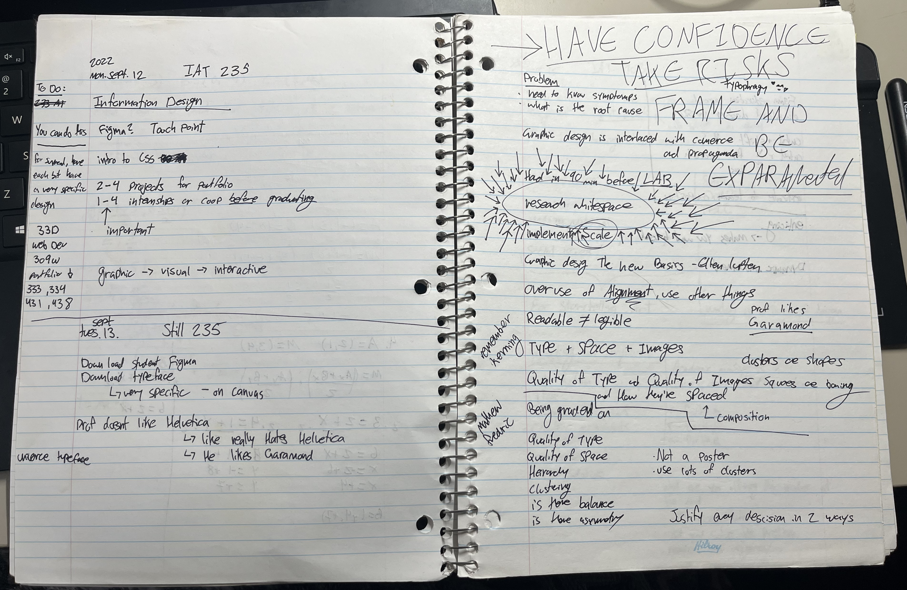
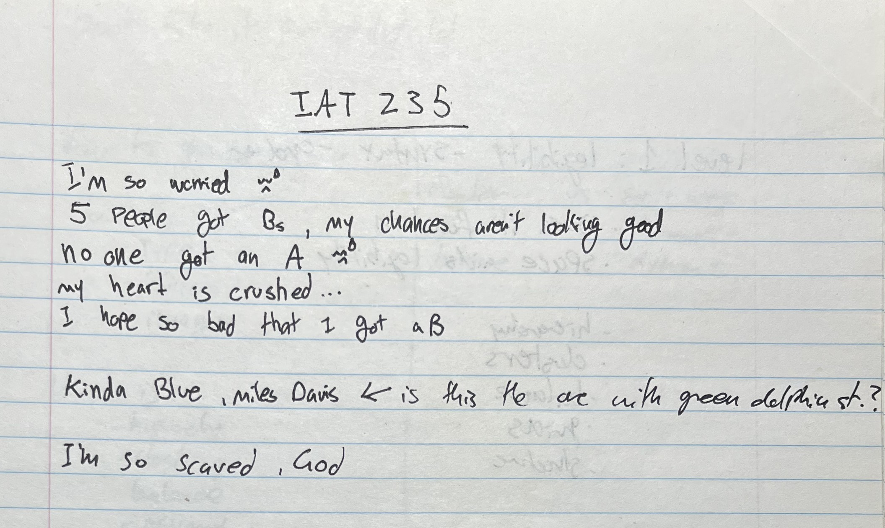
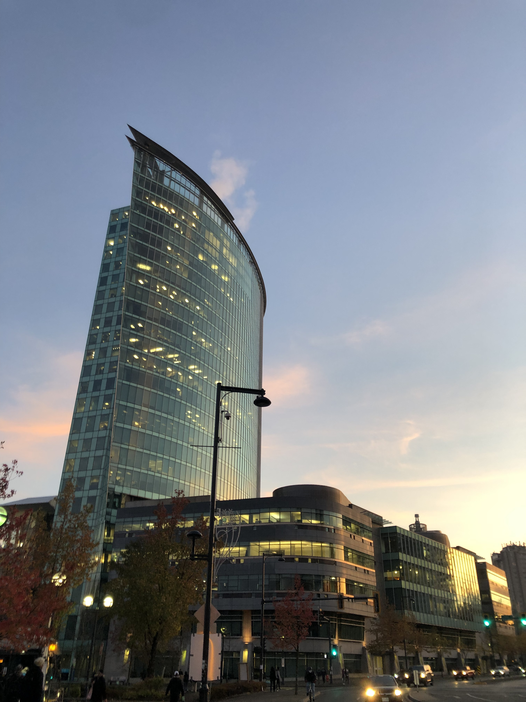
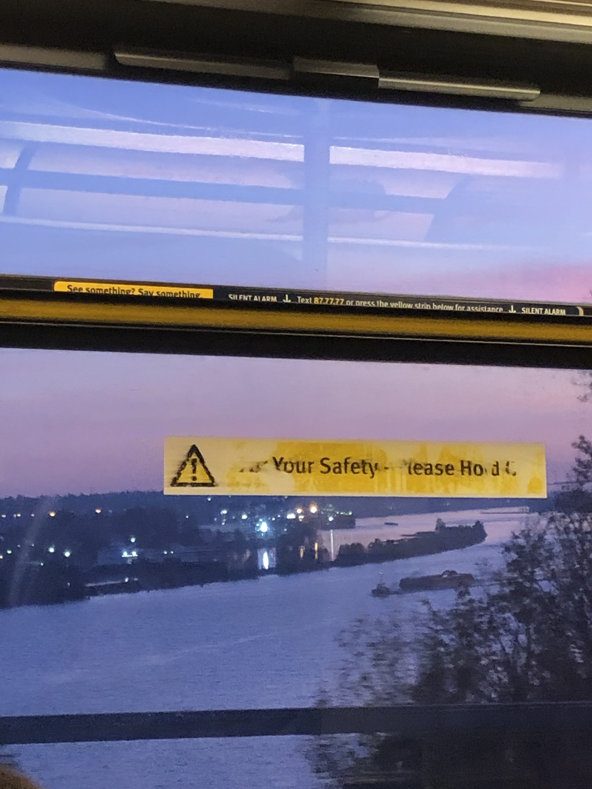
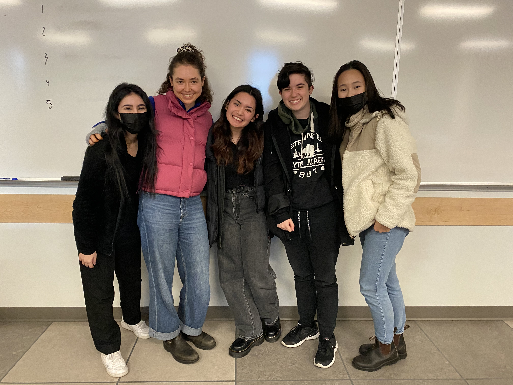
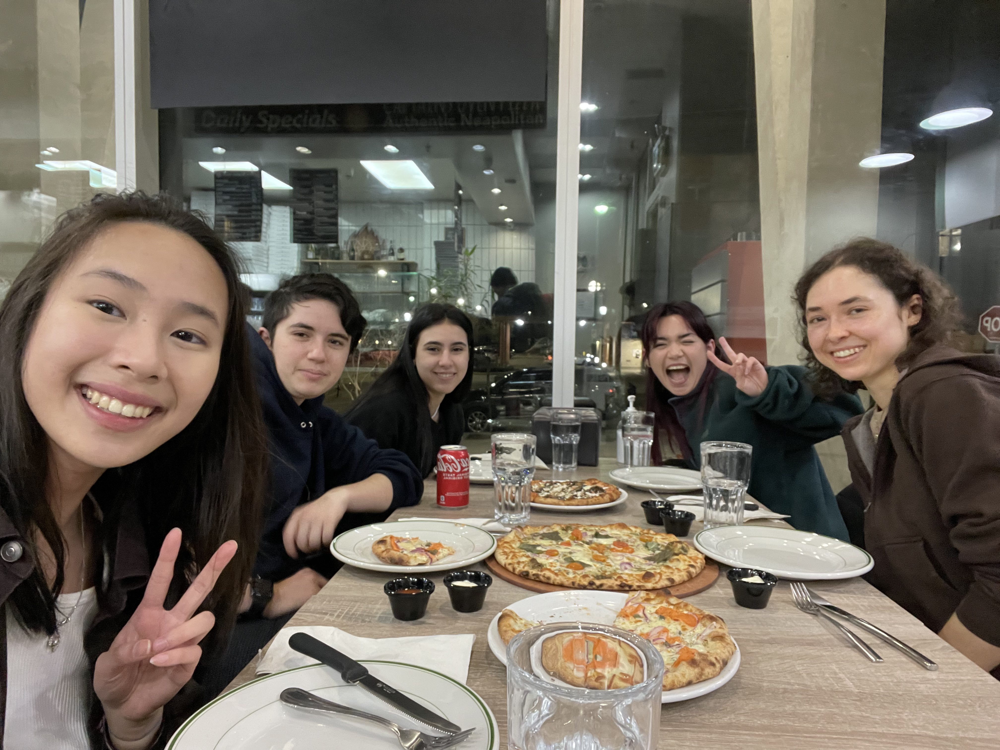
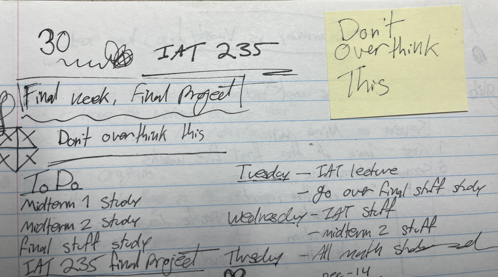

SFU's School of Interactive Arts and Technology (SIAT) is a unique program. It's smaller and more concentrated in niche subjects. The program is fluid and ever-changing, almost amorphous as it adapts to the advancing landscape of new technology. Students learn how to learn, how to adapt, and how to pick up necessary skills. Students are close and connected through the people we meet, teams we work in, and professors who guide us.

My notes of the first lecture
Monday, September 12, 2022
Russell Taylor was a professor that everyone knew, even if they never met him. IAT 235: Information Design was a class that everyone needed to take, and he taught it. Even though so many of SIAT's classes are mandatory prerequisites in the first two years, 235 was different. It acted as this touchpoint milestone to gauge other students. It was the first question you asked when you met someone at the beginning of the semester: "what classes are you taking?" and "have you taken IAT 235?" into "did you have it with Russell?"
It was a grueling class with a reputation as such. Russell ran a tight ship, shaping students fast and rough into competent designers. You arrived on time, paid attention, and worked hard. If you didn't, he would call you out pointed and specific. He wasn't mean. He was firm, a sturdy guideline to follow, strict for efficiency.

The notes I wrote in the second lab of the class. Russel was going through the projects and giving rough feedback in bulk for us to learn from other's mistakes.
We learned the roots of design. Starting out we were given which words to type and what font to type them in, just practicing putting words on the page. There was friction to the restrictions. People asked why it was so, why we couldn't look at our phones or use colour in the designs or use a different font. We all thought we knew how to put words on a page, at first, until Russell would point out things we didn't even think to think about. The learning curve was steep and fast. Limitations breed creativity, he would say, and he was right. We adapted. The critique was harsh in truth. There was no misillusion that we didn't know how to design while he did. I cried at my first feedback, but I adapted.
Harder assignments were done in teams. We bonded over the difficulty. Class lectures started with design basics, but then quickly dived through the realm of architecture into Dutch and Italian product design, taking concepts from museum spaces and mid-century furniture. He loved architecture. Now, I do too.
Russell liked hiking; when travelling through Greece, he stopped for a bit to earn some money laying bricks; during lecture he would take sips of tea from a thermos on his desk.


Photos I took during the semester I had IAT 235 of the Central City tower (left) where the campus is and the view out the skytrain window (right)
The group I had for the final project in that class are people I am never going to forget. The unofficial leader was Olivia Steede. She's a bright young woman with a keen eye for design. Olivia's an artist and musician who has made the best slide decks and presentations I have ever seen. Innate or learned, it's a talent. Isabelle would stay on campus for ridiculous amounts of time, sometimes overnight working on the project. Arousha and I would take the train back from Surrey to Coquitlam sometimes. It's an hour and a half commute. Diane and I both have our birthdays in December, only two days apart.

From left to right: Arousha, Olivia, Isabelle, Me, Diane.
Photo taken on the last day of class presentations Monday, December 12, 2022
A lot of the time in SIAT, the outcome of your final project is dictated by the group you're in. I was lucky enough to be in a phenomenal group. My 235 project is some of my best work, it's the one I show to people when they ask what I do for school, and it's only because of the team.
I feel guilty about it. I probably shouldn't, but I do. I know that there was no one idea that finalized it. I know that I contributed, pitched ideas, developed prototypes, I polished and cleaned designs; I know that I helped. At the same time though, I feel like I didn't.
The class difficulty wasn't because of the difficulty of the work per se, but in how much we needed to do and how fast we needed to do it. Lectures were on Tuesdays where we were given weekly criteria and readings. Our group met on Thursdays to go over everything and make a plan of attack, organizing who is going to do what and by when. This gave us three days to think, design, change the designs, think about it some more, develop something that reaches the criteria and then make a slide deck before handing it in Sunday evening to present it Monday morning.
One week we made three microsite concepts, fully prototyped with interactivity. Our whole project revolved around this collection of eight tapestries. In one of our microsites we made a website navigation that was a circle where each tapestry was a wedge the user can hover and click on. Russell said not to use that one because it looked like a pizza.
After the semester ended, the five of us went to a restaurant in King George to get pizza. Partly it was to celebrate making it through the end of the class, that we survived. It was also a little bit out of spite, because we all liked the circle nav and didn't think it looked like a pizza (it did).

Taken by Diane Tran
Friday, January 6, 2023
You always hear that the first stage of grief is denial, but I could never have fathomed how strong it was until I experienced it. When my grandfather died, it was a long drawn out illness, one that we saw coming and had lots of time to process. Tragic in its own right. When Russell Taylor died, I found out from a discord message in the old chat our group used for class.
"Did you guys hear?" one of them said, "Apparently Russell passed away..."
I didn't believe it.
Susan Clements-Vivian is a brilliant woman. She was the first professor I had for my first university class IAT 100: the introduction to SIAT, held over zoom during Covid. She taught me again for IAT 202: the film class. I met J there who was the TA at the time and director of studioSIAT. I got to know Susan and J better when I took a directed study under their guidance.
Not a lot of people came to the impromptu memorial for Russell held in one of the studios on campus. Susan was there; we talked. Olivia was there too; we talked less.
"I didn't believe it at first," Susan told me. I didn't either.
I left early.

My notes of the last lecture
Monday, December 5, 2022
Russell Taylor was a brilliant man. He built the foundation for everything I know about design. He formed how I look and think, how I approach problems and carry out solving them. Russell tore me off the shifting sands I was trying to find my footing on, and he built me a sturdy concrete platform.
He's in my mind when I walk through Vancouver, admiring the architecture. I can hear his voice when I see furniture asking me if I can see the joints or not. It's a deliberate choice by the designer, he told us, whether you can see the joints of a chair or a table.
Russell lives in my work. In the scaffolding of my layouts and in the joints of my work, and in the words I type and the space I put them in; in everything I design and build, every idea I have, and every project I finish; whenever I choose a font, present my work, or network with other designers, Russell's handiwork is there.
I wish I could thank him.